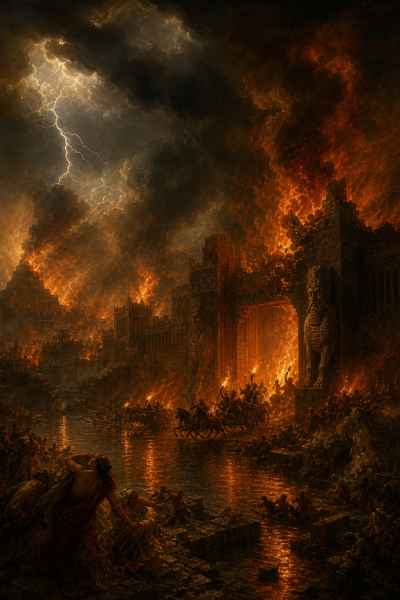

Old Testament · Book 34 of 39
Nahum
A century after Nineveh repented at Jonah's preaching, the same cruel empire has returned to its violence, and this time no one is sent to warn it — only to announce its fall.
Where Jonah pleaded with Nineveh to repent and watched God relent, Nahum arrives generations later to pronounce the sentence that finally falls: the empire that terrorized the ancient world for its violence, idolatry, and endless conquest is about to be erased, and no one will mourn it.
The LORD is slow to anger, and great in power, and will not at all acquit the wicked.
What happens in Nahum
Nahum opens with a majestic description of God's character, slow to anger yet never acquitting the guilty, whose power can dry up seas and shake mountains, but who is also a stronghold for everyone who trusts him. This God now turns his full attention to Nineveh, the capital of Assyria, the empire that destroyed the northern kingdom of Israel and terrorized the region with deliberate brutality for over a century. The second chapter vividly pictures the city's coming siege in motion, chariots flashing like torches through the streets, officers stumbling as they rush to the walls, and the queen of the empire led away captive while her treasures are plundered. The final chapter names exactly why this judgment is deserved, calling Nineveh a bloody city full of lies and robbery, comparing its imperial seductions and witchcraft-like political manipulation to a harlot who will finally be exposed and shamed before the nations she exploited. The book ends bluntly: the wound is incurable, and everyone who hears the news will clap their hands, because there is no one left who hasn't suffered under Assyria's cruelty.
Why it matters
Nahum answers a question the Bible rarely lingers on: what happens when a nation given mercy returns to evil. It insists that God's patience is real but not infinite, that oppressors of the vulnerable will eventually be called to account, and that the same God who is a stronghold for those who trust him is also a consuming fire to empires built on terror. It is a hard book, but a necessary counterweight to grace that costs nothing.